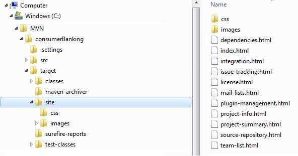
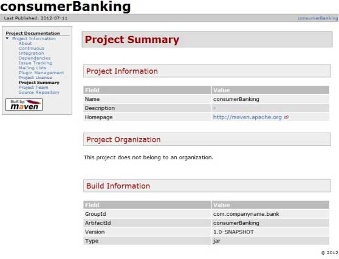

# 10-工程文档
# Maven - 工程文档
本教程将教你如何创建应用程序的文档。那么让我们开始吧，在 C:/ MVN 目录下，创建你的 java consumerBanking 应用程序。打开 consumerBanking 文件夹并执行以下 mvn 命令。
C:\MVN>mvn site
1
Maven 将开始构建工程。
[INFO] Scanning for projects...
[INFO] -------------------------------------------------------------------
[INFO] Building consumerBanking
[INFO]task-segment: [site]
[INFO] -------------------------------------------------------------------
[INFO] [site:site {execution: default-site}]
[INFO] artifact org.apache.maven.skins:maven-default-skin:
checking for updates from central
[INFO] Generating "About" report.
[INFO] Generating "Issue Tracking" report.
[INFO] Generating "Project Team" report.
[INFO] Generating "Dependencies" report.
[INFO] Generating "Continuous Integration" report.
[INFO] Generating "Source Repository" report.
[INFO] Generating "Project License" report.
[INFO] Generating "Mailing Lists" report.
[INFO] Generating "Plugin Management" report.
[INFO] Generating "Project Summary" report.
[INFO] -------------------------------------------------------------------
[INFO] BUILD SUCCESSFUL
[INFO] -------------------------------------------------------------------
[INFO] Total time: 16 seconds
[INFO] Finished at: Wed Jul 11 18:11:18 IST 2012
[INFO] Final Memory: 23M/148M
[INFO] -------------------------------------------------------------------
1
2
3
4
5
6
7
8
9
10
11
12
13
14
15
16
17
18
19
20
21
22
23
24
25
2
3
4
5
6
7
8
9
10
11
12
13
14
15
16
17
18
19
20
21
22
23
24
25

打开 C:\MVN\consumerBanking\target\site 文件夹。点击 index.html 就可以看到文档了。

Maven 使用称作 Doxia 的文件处理引擎创建文档，它将多个源格式的文件转换为一个共通的文档模型。要编写工程文档，你可以使用以下能够被 Doxia 解析的几种常用格式来编写。
| 格式名称 | 描述 | 引用 |
|---|---|---|
| XDoc | Maven 1.x 版本的文档格式 | http://jakarta.apache.org/site/jakarta-site2.html |
| FML | FAQ 文档格式 | http://maven.apache.org/doxia/references/fml-format.html |
| XHTML | 可扩展 HTML 格式 | http://en.wikipedia.org/wiki/XHTML |